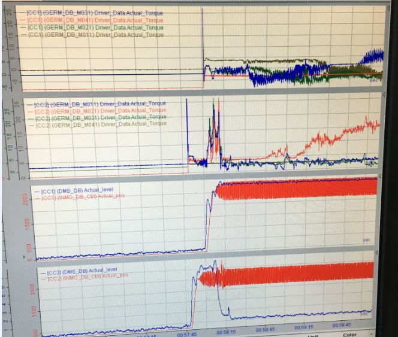
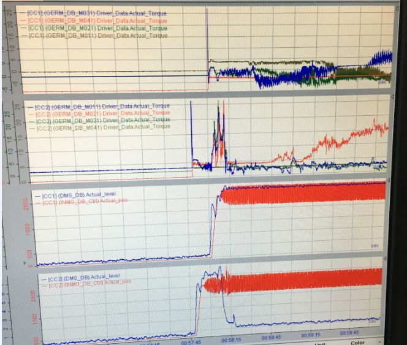
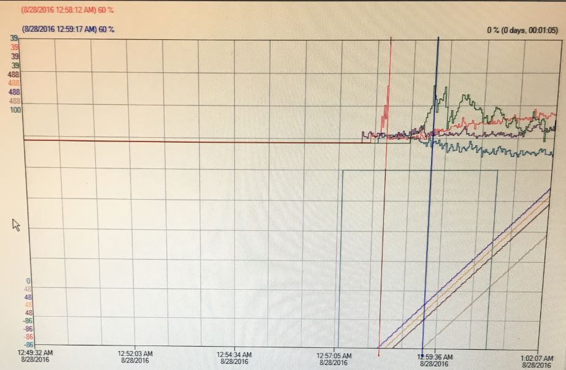
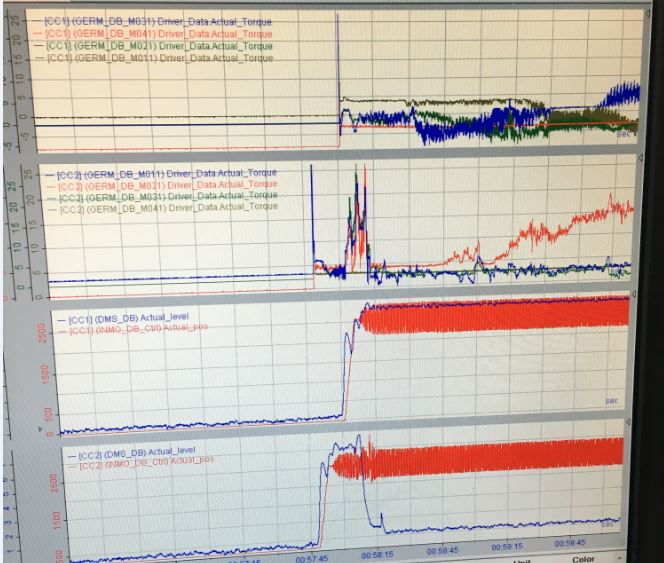

I will update this section as I start writing more PC code. Most of my software has been written in Ladder Logic, Function Block Diagram, and Statement Lists with PLCs. I have written a fair amount of code in various scripting languages for HMIs, sometimes they are more VB style or Java. Most of the PC coding I have done has been for school, or myself. I will post some of my stuff here as well.
These are pictures of trends and data analysis that I have had to do in order to investigate process and equipment issues.
I did complete my Green Belt with Charter Steel, and I may someday go for my Master Degree in Data Analytics.


Last Updated 1/2/2019